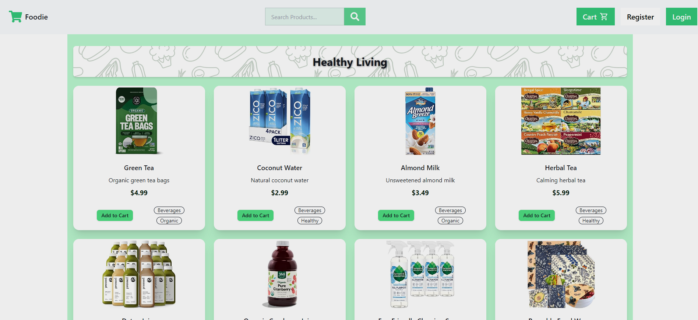

Foodie - Online Shopping Site
A modern and responsive grocery store website for all your needs with quick checkout and shipping.

Based in Austin, Texas in a small town called Hutto I've lived there for 13 years and counting. Before my time in Texas, originally I was born and raised in Glendale, Arizona! I am a current junior at the University of Texas at San Antonio, majoring in Computer Science with a concentration in Software Engineering. I've always had the craving and love for designing and building things in the world of robotics and architecture in high school. Now I choose to develop a stronger impact within the fast growing world of technology. When it came to my beginning adventure with Software Engineering fresh out of high school, starting my college career in Computer Science became a unique calling for me. I care deeply for the people in my life and desire to be a helping hand when it's not asked for, so developing web and mobile applications that are user-friendly, easy, but not too complex to operate, and supports the desires of the users is how chose to make an impact as a future Software Engineer.
A modern and responsive grocery store website for all your needs with quick checkout and shipping.
Intuitive and easy-to-use alarm setter mobile app for Android.
Conducted a UX design case study for a food truck review app, following the design process.
A need for quick and easy access to multiple-choice questions to keep your brain sharp.
An implementation of Dijkstra's algorithm to find the shortest path between two points.
Simulated Round Robin, FIFO, SJF, and uni-programming operating system scheduling algorithm in Jav.
7/2024 - Current
Remote
7/2024 - 8/2024
Remote
6/2024 - 7/2024
Remote
.png)
Recently, I embarked on creating my first blog using Next.js, Markdown, and TypeScript, where I document my journey as an aspiring Software Engineer. The blog highlights key projects I’ve worked on and chronicles my experiences, including my participation in a Software Engineering Fellowship. In this space, I share insights gained from both industry exposure and academic work as I prepare for graduation in the summer of 2025. I aim to provide valuable content, from technical challenges to personal growth, and I’m eager to continuously improve. I welcome any feedback or suggestions on how I can enhance the blog and make it an even more engaging resource as it evolves.